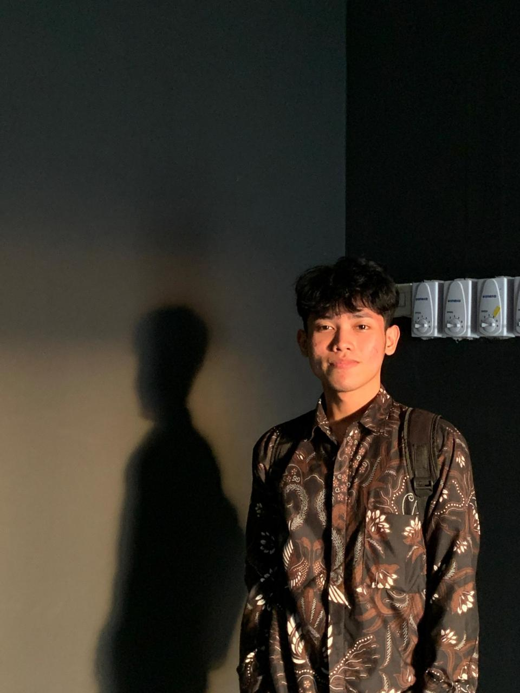

Mahasiswa Informatika dengan minat yang terus berkembang di bidang AI/ML dan teknologi web. Saat ini sedang mengeksplorasi data science dan ekosistem blockchain.
Hubungi Saya
Halo! Saya Faiz Abdurrachman, mahasiswa Informatika yang passionate dalam mempelajari teknologi baru, khususnya di bidang Machine Learning dan Web Development.
Saya percaya bahwa pembelajaran adalah proses yang berkelanjutan, dan saya selalu antusias untuk mengeksplorasi hal-hal baru di dunia teknologi. Saat ini, saya fokus mengembangkan kemampuan saya di bidang data science dan artificial intelligence.
Saya terbuka untuk kolaborasi dan kesempatan belajar baru yang dapat membantu saya berkembang sebagai profesional di bidang teknologi.
Beginner Level
Beginner Level
Beginner Level
Beginner Level
Implementasi algoritma Decision Tree untuk klasifikasi penyakit jantung menggunakan Python. Project ini merupakan tugas UAS yang mengeksplorasi dasar-dasar machine learning.
Python Machine Learning Decision TreeMengikuti bootcamp intensif tentang literasi Web3 yang diselenggarakan oleh kampus. Mempelajari fundamental blockchain, cryptocurrency, dan ekosistem Web3.
Blockchain Web3 CryptocurrencyMenyelesaikan online course Machine Learning untuk Pemula di platform Dicoding. Mempelajari konsep dasar ML, supervised learning, dan implementasi model sederhana.
Machine Learning Python DicodingTertarik untuk berkolaborasi atau ingin berdiskusi tentang teknologi? Jangan ragu untuk menghubungi saya!